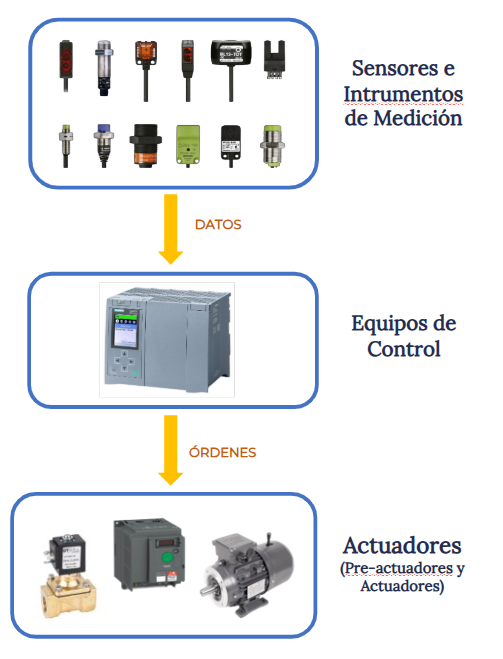
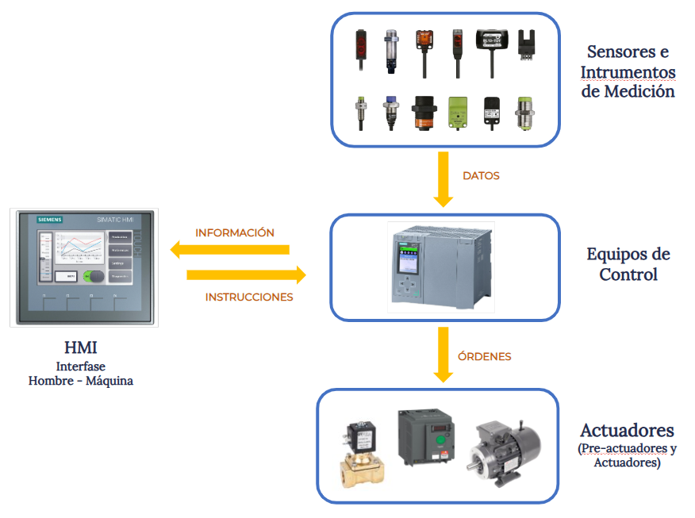
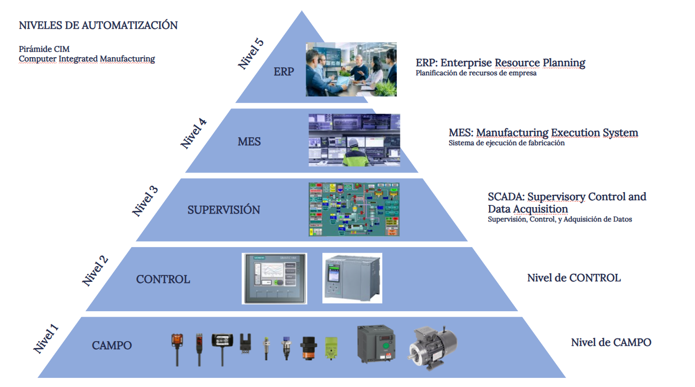

Automatización y Control
02. Estructura de un Sistema Automatizado

{kind=link}
{kind=link}
Automatizar es implementar los dispositivos tecnológicos necesarios para lograr que una máquina o un proceso funcione en forma autónoma con la mínima intervención humana.
¿Cuáles son estos dispositivos tecnológicos?
La gama de dispositivos utilizados en automatización es muy amplia. Para estudiarlos los agruparemos de acuerdo a sus funciones generales, y esta clasificación nos brindará el esquema general de un automatismo.
El primer conjunto de componentes que mencionaremos son los ACTUADORES.
Estos dispositivos son los que ejecutan las acciones requeridas en las máquinas y en los procesos, tales como accionamiento de motores, el accionamiento de válvulas neumáticas e hidráulicas, y la conexión y desconexión de otros equipos tales como resistencias, inductancias, aparatos de maniobra en redes eléctricas y otros.
Por lo tanto en este conjunto de dispositivos están los contactores, los arrancadores electrónicos, los variadores de velocidad, los drivers, las electroválvulas, etc.
 Por otro parte, los SENSORES y los equipos de medición toman los datos del estado de las máquinas y de los procesos, detectando la posición de piezas mecánicas, la presencia de materiales, realizando mediciones de variables físicas y químicas como temperatura, presión, caudal acidez, etc.
Por otro parte, los SENSORES y los equipos de medición toman los datos del estado de las máquinas y de los procesos, detectando la posición de piezas mecánicas, la presencia de materiales, realizando mediciones de variables físicas y químicas como temperatura, presión, caudal acidez, etc.
A este conjunto de datos se los denomina “datos de campo”.
 Los EQUIPOS DE CONTROL son los encargados de recibir los datos de campo (proveniente de los sensores) y en función de su configuración y de uno o varios programas llamados programas de usuario, deciden las acciones a ejecutar. Emiten las ordenes de ejecución a los actuadores, y administran las tareas de comunicación con los diferentes dispositivos de su periferia.
Los EQUIPOS DE CONTROL son los encargados de recibir los datos de campo (proveniente de los sensores) y en función de su configuración y de uno o varios programas llamados programas de usuario, deciden las acciones a ejecutar. Emiten las ordenes de ejecución a los actuadores, y administran las tareas de comunicación con los diferentes dispositivos de su periferia.
En los primeros tiempos, los equipos de control de un sistema se basaban en lógica cableada utilizando principalmente relés electromecánicos. Actualmente los equipos de control están desarrollados a base de microprocesadores y microcontroladores, por lo tanto son equipos programables que según el ámbito y las características de la aplicación pueden ser placas electrónicas diseñadas para uso específico, computadoras de uso general o especial, o controladores lógicos programables comúnmente llamados PLCs, siendo éstos los más utilizados a nivel Industrial.

Además de los datos de campo recibidos y las órdenes de actuación emitidas, los equipos de control reciben parámetros e instrucciones de los operarios y emiten información sobre el estado del sistema.
Para esta interacción con las personas existe un conjunto de equipos denominados interfaz hombre-máquina o HMI por sus siglas en inglés “Human Machine Interface”. Estos dispositivos se encargan de que la información entregada por el sistema sea traducida a señales que las personas puedan interpretar, y los parámetros y las instrucciones enviadas por los operarios sea entendida por el sistema de control. Los dispositivos que cumplen estas funciones pueden ser simples pulsadores o lámparas de señalización, o complejos sistemas de pantallas manejadas por computadoras.

Además, un sistema automatizado puede interactuar con otros sistemas intercambiando información e instrucciones. Para esta función se utilizan herramientas informáticas específicamente desarrolladas para la supervisión, control y adquisición de datos, conocida como SCADA por sus siglas en inglés de “Supervisory Control and Data Acquisition”.
Y en orden de mayor jerarquía puede ser implementado un sistema para la supervisión y control de la producción conocido como MES “Manufacturing Execution System” el cual proporciona una supervisión y sincronización general de toda la planta. Un MES es un software que actúa como sistema de control y monitoreo de la información para la gestión de procesos de producción en entornos industriales.
Los datos y la información generada en las aplicaciones mencionadas pueden ser utilizadas en lo más alto de la pirámide jerárquica de las empresas. Para ello se utilizan otras herramientas informáticas destinadas a la planificación de recursos empresariales o ERP “Enterprise Resource Planning” las cuales integran los procesos centrales del negocio necesarias para administrar la empresa, ayudando a gestionar eficientemente todos estos procesos en un sistema integrado.
3.png)
Para todo el sistema, se debe contar con las conexiones eléctricas y las redes de comunicación necesarias para la transferencia de todos los datos y la información mencionada, siendo los equipos de control el centro neurálgico de este sistema. El medio físico por el cual se transmite la información debe ser acorde a cada tipo de dato. Cada uno de ellos puede ser una señal binaria, una señal analógica, o un dato digital que puede ser transmitido por redes cableadas, fibra óptica o transmisión inalámbrica.
La forma tradicional y centralizada de presentar el esquema de un sistema automatizado es la Pirámide CIM de Automatización, desarrollada a partir de la década de 1970 y estandarizada por la sociedad internacional de automatización en su Norma ISA 95, la cual muestra a través de una jerarquía de cinco niveles las funciones integradas de automatización mencionadas en el esquema anterior.

El esquema y la pirámide de automatización son herramientas que nos brindan un orden para abordar los diversos temas que deben ser estudiados para lograr la capacidad de implementar un sistema de automatización industrial.
En las próximas presentaciones iremos conociendo los principales aparatos utilizados como actuadores, sensores e instrumentos de medición, interfaces hombre máquina y equipos de control. También presentaremos las aplicaciones típicas utilizadas en la industria, empezando por las más básicas como ser accionamiento de motores y mandos industriales que pertenecen al primer nivel de automatización, siguiendo por principios de programación y control pertenecientes al segundo nivel de automatización.
El estudio de estos temas requiere contar con una base teórica que abarca desde principios de lógica y Álgebra de Boole para el manejo de variables binarias y la programación de secuencias proposicionales, hasta teoría de control para el dominio dinámico de variables analógicas.
Video sugerido
Obra publicada con Licencia Creative Commons Reconocimiento No comercial Sin obra derivada 4.0